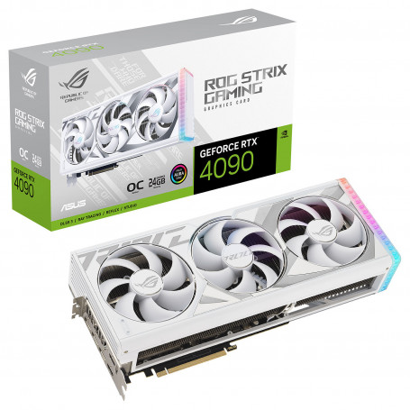
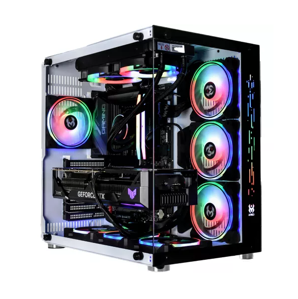
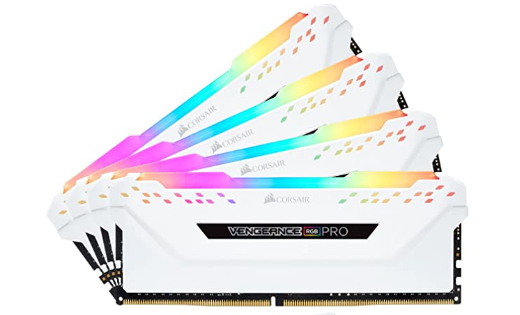
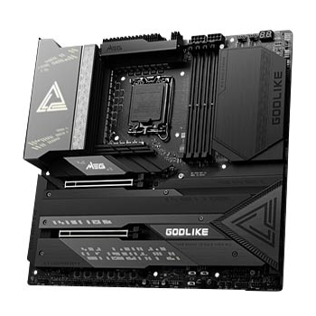
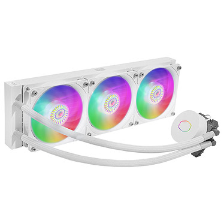
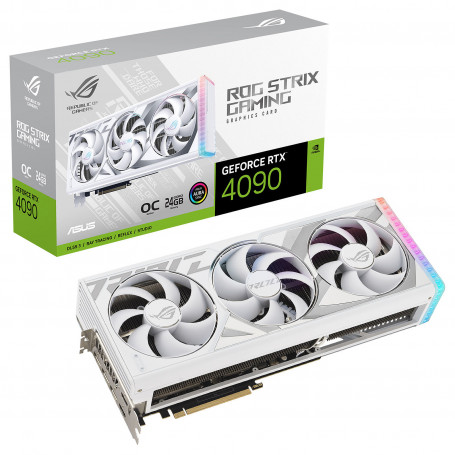
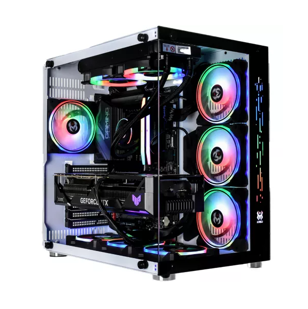
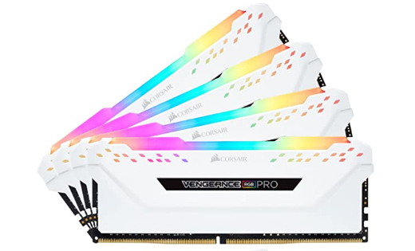
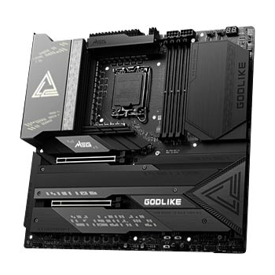
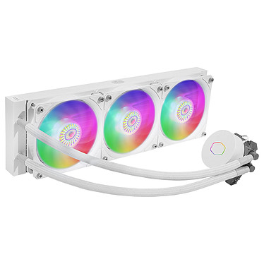

De la découverte à la démesure, l'évolution de la puissance de calcul des composants electroniques et de leurs consommation d'énergie
📜 Histoire & création :
depuis l'apparition des composants électroniques et des pc en 1960, leur puissance de calcul et leur consommation en énergie a explosé, on parle de puissance doublée tous les 2 ans, comme l'énonce la loi de Moore, mais on parle aussi d'une énorme augmentation de consommation d'énergie.
⚖️ Un problème d'équilibre :
Avec l'évolution constante des technologies et de la puissance des ordinateurs, les technologies créés sont parfois inutiles dans les systèmes actuels, car trop performants en comparaison au software, c'est-à-dire les logiciels, sites qui fonctionnent sur le hardware (le pc en lui-même). L'écart / retard technologique fonctionne dans les deux sens bien sûr, mais malheureusement, on se retrouve souvent avec des compétences inégales entre les différents domaines. De plus de nos jours la consommation d'energie dans un foyer causée par du materiel informatique et ou audiovisuel est de près de 15 % comme on peut le voir sur le graphe si dessous representant l'ensemble de la consommation d'un foyer en moyenne. Cette consommation aura tendance a augmenter avec le temps avec la digitalisation et la robotisation des elements de vie courante, ce qui causera d'autant plus de consommation.


🔍 La recherche et les nouveaux composants :
La plus part des grandes marques de hardware poussent chaque année les limites de leurs modeles et en créent de nouveaux pour satisfaire des logiciels de plus en plus performants, la création et le devellopement de ces nouveaux materiels permet de découvrir des nouvelles technologies qui seront par la suite uttilisées à grande echelle dans d'autres cadres. le prix parfois très elevé peux se justifer par la recherche et devellopement proposé par les sociétées, mais aussi par un profit certain du fait que certaines entreprises entretiennent leurs clients avec des services souvent exagérés et ventés comme revolutionnaires.
 









♻️ l'ecologie relayée au second plan :
Dans une ère ou la découverte et la puissance des composants electroniques prime sur tout le reste, la consommation en energie mais aussi et surtout les metaux et composants rares et couteux qui sont uttilisés sur tout les modeles de hardware poussés de ces dernieres années son une grande menace pour l'environnement car ils puisent dans les energies souvent fossiles / non reuttilisables de la terre. cette mauvaise conduite qui aura tendance a croitre dans les prochaines années risque fortement de dégrader la situation environementale du monde